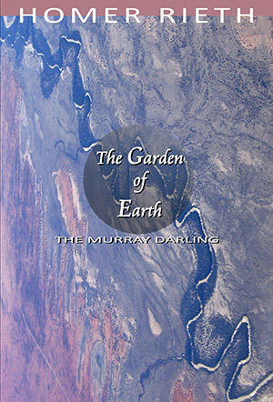
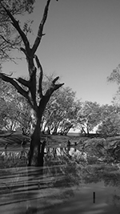

|
|


{kind=link}

| Australia only Rest of the World |
Book Description
| Out on the river you’ll
see there are swifts and babblers and other assorted thieves all of whom have their own bush telegraphy, a kind of Morse passing quietly from one landmark to the next, disappearing and reappearing with wild insouciance at the waterline—some, in fact, say that’s where another life begins, more secret than you know, to do with the keeping alive of memory, all those residual mysteries that tend to hang around towns, theirs are stories the river dwells on the longest, which it passes on surreptitiously to creeks, dams and waterholes— |
| The
Garden of Earth is told in Thirty Five
Books. Each canto is a long-breathed sentence that takes you in its
flow. They gather all the hues of nature, history, culture and
philosophy like metaphorical
rivers gathering majestic detritus. It invites us to consider the
plenitude of the world, but also how precious and precarious a thing
this is. Homer Rieth’s first epic Wimmera gave voice to the history, legend and folklore of the Wimmera region of north western Victoria, and to ideas of 'place' and 'country' not only as cultural markers, but as ciphers of an enduring mythos. In his new companion epic, he turns his gaze to the larger arena of the Murray Darling, to this oldest of continents more broadly. He offers a vision of the natural environment and the human world as bound together on a global scale. The Garden of Earth is a hymn to and argument in defence of the future of the planet. It is the poet's final assay of our age-old dream vision of the world, only here it is as something at once luminous and exceptionally Australian. |
Cover photograph: Tim J Keegan, Aerial view of The Darling River from 15000ft
ISBN 9781876044893
2016
600 pgs
$49.00 - Australia
$65.00 - International
Book Sample
BOOK SIXTEEN

Mystic of the West
When I spit, he says, I leave more moisture on the ground than the rain
out here could ever do,
the likes of which are getting more seldom, more uncertain, more remote,
and not to say
thinner on the ground than ever—sometimes no more than a cover slip
of cloud brocade,
stretching from Charlotte Pass to Three Peaks—and some days you’d think
that what’s left of the world is blowing about Mount Victory,
as a kind of aimless cloud of debris,
and Mount Victory itself seems so far away as to drive the compass points
to distraction—
it’s then that you realise how much Fish Falls means, and Wallaby Rocks
and Rose Creek Road, where time passes like child’s play—
and it does so, compared to geological ages, but not to the ice island, ‘Cold Edge’,
where the Svalbard Seed Vault is a store of thousands of seed lines,
ten thousand coming at a time—at a speed inversely proportional to the sound
that time makes, when it’s running out—
and you call me a dreamer, he says, because I remind you of beatific things,
like these once well-watered slopes, or the scarps and half-hidden skews
heading down to Asses Ears, crossing in no time the fragile kidney-bean grassland
of Victoria Valley, piping the last post of spring—
you resent my reminding you of such things, he says, so be it—I in turn resent
your callow digital complacency, your fatuous twenty-first century supine acceptance
of everything that they (a category of unmistakable implication) that they, let me say,
tell you, for the benefit of themselves, of course, and for your assured destruction—
consider it done, he says, and meanwhile go on warbling the praises
of genetics, the new theology—go seek the unholy grail of ‘genetic material’,
prepare your march-pasts
and ticker tapes for the future utopian breeders—then come the day
you’ll bask in the gloom of your own ignorance, naming by rote (as if that makes
it all sound more sincere, more true, more sacred!)
each seed box—brassicas, tropical crop wild relatives, oats, lupins, oilseeds,
each in a state of impermeable and virgin perfection!—ah yes, at last,
at last! the virtual as sacrosanct—and such horrors as disease or vermin or frost,
even the grotesqueries of old—drought, plague, flood—
all of them soon to be if not already, things of the past—
let us praise the Lord of Uncreation, of New Creation, of Creation by Artificial Means,
the Lord is our fortress, our collateral undamaged—and his Doomsday
is our strength and our salvation—we are one, though poles apart—
a consummation all-consuming, all-consumed—
well (I should tell you) in the end he gradually began to calm down, or seemed to,
when the talk turned to the buglers’ picnic at Zumstein’s pisé cottages—
listen, he did, to the last post of spring.
Epic work on Murray Darling Basin urges authorities to preserve The Garden of Earth
ABC Rural By Danielle Grindlay
Photo: Victorian author Homer Rieth has penned a 600-page epic about the Murray Darling Basin. (Danielle Grindlay)
In what would have to be one of the most unusual publications on the Murray Darling Basin, a Victorian author has penned a 600-page poem about the river system.
Audio: Victorian author Homer Rieth has penned a 600-page epic about the Murray Darling Basin. (ABC Rural)The epic feat, titled The Garden of Earth, comes after seven years of research and hand-written ponderings by Minyip-based poet Homer Rieth.
From a young age Dr Rieth carried a burden to live up to his namesake and honour the ancient Greek poet behind epics the Iliad and the Odyssey.
Dr Rieth's first attempt to reinvent the epic — a long, single poem — paid tribute to Victoria's Wimmera grain belt, where he settled down to write 17 years ago.
But The Garden of Earth comes with a strong message about the future of the Murray Darling Basin.
"The poem is addressing very real and vital, contemporary, concerns … which might come under the more broadly framed heading of climate change," he said.
"It's a real place that, unless we look after it, will be something that will be lost."
the likes of which are getting more seldom, more uncertain, more remote, and not to say
thinner on the ground than ever — sometimes no more than a cover slip of cloud brocade
— extract from 'The Garden of Earth'
Dr Rieth hopes his book, and a complementary 120-minute
piece of piano music, will influence discourse around water policy.
"It is political because, unfortunately, mere hymns of praise are no longer enough," he said.
"That's why my poem, at many points, tries to demand of the reader that he address the future of the planet as well as simply wanting to find some poetic hymn to it."
As well as travelling along parts of the 2,520 kilometre Murray River and 1,472 km Darling River, Dr Rieth consumed as many books and reports about the river system he could find.
"I believe, without any doubt, that the poem is as valid and as comprehensive a submission that might be put to authorities who run the river systems or even political parties," he said.
"The poem is not some far-fetched, pastel, afternoon indulgence, in the way that say a weekend painter might paint a landscape."
"It's deeply considered, over a very long period of time, and strongly argued evocation of the river systems, the landscape, the environment [and] the continent, which it lies in our power to do something about."
It has taken about 14 years for Dr Rieth to complete Wimmera and The Garden of Earth and the author is very clear that a third epic is off the table.
"I've said most, if not all of what I wanted to say," he said.
"I think two is about right — my namesake wrote two and (ancient Roman poet) Vergil only wrote one."
RealPoetryMovie
Dr. Homer Rieth talks about his epic poem 'The Garden of Earth'.
Reviews
A defence of his own epic
Homer Rieth
18 September 2017
I remind myself that it's just good the book is at all reviewed regardless, poetry books especially are sorely neglected in this matter. And also at least it was a lengthy review, and canvassed a broad range of possible responses to the poem.
However the claim that the book ignores indigenous Australia is laughable as well as inaccurate, as there are many references and allusions to the dream time, to Aboriginal history, customs, traditions, and of course art. For example, no less than four of the Cantos (No. 22, 103, 110 and 111) pay homage to and explore the vision articulated in the paintings of Albert Namatjira! Indeed the paintings are actually named, e.g. 'Ghost Gum, Glen Helen', 'Sand-Drift', 'Ullambaura Haas Bluff'. But I suppose Namatjira is old school, not cool like the dot painters of the Kimberley today, whose works sell for a fortune, whereas Namatjira's recognition was slow in coming and he died poor.
And then, to top it all, there's a turning point, where the mood and the tone of the whole poem changes, Canto 66, which is pivotal and deeply indigenous.
I doubt whether reviewers ever do read the whole of the books they review, and one this size is probably far too much for them!
Anyway, I'm not really complaining, only grouching! I just wish reviews were constructed with more diligence! For instance, calling the poem "The Garden of Eden" is a real howler, even though this clanger taps (unconsciously?!) into the work as being in some sense a religious poem, or perhaps to put it another way, a poem evoking the spirituality of the Australian landscape! That was truly a Freudian slip! And frankly I'm flattered!
Anyway, Mr Wood has put the book in good company, where if I may say so it belongs, with Walt Whitman, Milton, Kalidasa, Olsen's 'Maximus', Walcot's 'Omeros', Jose Hernandez's 'Martin Fierro' and of course the Australians, Pi O and John Kinsella, among others.
Review Short: Homer Rieth’s The Garden of Earth
Robert Wood
Cordite Poetry Review
26 June 2017
You could be forgiven for thinking that ‘Australia’ was simply this place, rather than an imagined community. It is of course not only a phantasm or a figment that is whole, but also real and divisible. In poetics, it is not a stretch to suggest that there is a heuristic, ascendant, paradigmatic separation between those in a transnational sphere sipping turmeric lattes and those authentic patriots tilling the soil. This fault line, which is, of course, anachronistic and dialectical, exists in the selected texts and influences as well as the paratextual selling points that tell us something is ‘traditional’ or ‘experimental’, ‘Romantic or ‘modern’, ‘country’ or ‘city’; in what claim ‘this is Australian’.
Homer Rieth’s The Garden of Earth is packaged as an Australian epic, and yet, it might be better to suggest that it is a located and regional long poem that is speaking to nation and nature. This is not the same ‘Australia’ as Pi O’s beloved Fitzroy in his 24 Hours, nor is it similar to the Wheatlands of John Kinsella’s Divine Comedy. It takes as its own location the whole of the Murray-Darling, building from Rieth’s home in Minyip in the Wimmera region in regional Victoria on the East Coast, where he has lived for several years.
And yet, one cannot help but notice that The Garden of Earth, like respective works by O and Kinsella, is a poetic idea of ‘Australia’ that takes as its root and routes a direction from ‘the West’, a Greco-Romanic understanding of where epic comes from. Perhaps this shouldn’t be surprising given all these authors have European heritage, but it is striking given the demographic realities of a decolonising Australia, which brings with it Indigenous and CALD spectres, materials and discourses. There are, of course, epic traditions in each and we do not have to rely only on Odyssey and Iliad like good colonial boys might, but could suggest the Ramayana, Martin Fierro, Omeros or any other such non-Western undertaking. What though can we learn from Rieth’s vision about the epic in the here and now? And how might this presentist perspective be projectively useful?
Rieth’s book is a big one. Coming in at 584 pages, it must approximate some 15 thousand lines – bigger than Milton’s Paradise Lost, bigger than Kalidasa’s Raghuvamsa, bigger than Berndt’s Three Faces of Love. But then again, the Murray-Darling is a big river, placing fifteenth in length worldwide, between the Niger and Tocantins. Rieth’s work in the basic proportions would seem appropriate.
Although the epigraph of the work is taken from a translation of Hafiz, The Garden of Eden emerges from a transatlantic milieu. The preponderance for rhyme and the long sentence lends a Whitmanian cadence – expansive, regular, encompassing – which is buttressed by the familiar expression ‘I sing’ (on page 58 particularly). There are also references to Walt’s contemporaries Longfellow and Kendall. The work is not ‘difficult’ then in terms of message, pagination, rhythm, line-break, form or style. This project does not come after Charles Olson (Maximus poems) or Basil Bunting (Briggflatts) let alone Rachel Blau DuPlessis (Drafts) or The Grand Piano. While Ezra Pound is referenced (11) and Robert Lowell is quoted (488), it is not a stretch to say it pre-Modernist, hence the signposts of the late nineteenth century.
At the level of content The Garden of Eden is firmly focused on nature with occasional painterly references (Delacroix, Leonardo, Lorenzo Lippi) and some more popular culture (beer, cricket, footy in Canto 7; and ‘Barbeque Shapes’ (25) [one of my favourite flavours]). These references often come from a different location and generation to mine (I only know ‘California poppy’ because that is what my grandfather put in his hair) but that does not mean they are inaccessible. What does distinguish the work is that the land is often idyllic, pure, silent, often Romantically so, suggesting a lack of eco-critical co-ordinates and some sediment of the idea of terra nullius, which is confirmed by the lack of Indigenous references, the absence of living characters and the anachronistic (mis)spelling of Arrente as Arunta (56). This is a work of landscape with landscape punctuated by high culture from Europe or poetic expression that pre-dates federation on this continent. There are unnamed interlocutors, whom Rieth quotes, but not characters; and, given the evenness of tone this implies a work that is not ‘polyphonic’ (in Bahktin’s sense) or ‘dramatic’ (in Hegel’s). The world is brought into the subject, the speaking ‘I’ of a poet and then sent back out whole and resolute. This central I expresses itself in a high voice (see the use of ‘O’ to begin sentences and to pre-figure ownership for example in ‘O my Murray, /my Campapse, /my Ovens, /my Goulbourn, my Murrumbidgee’, (11); ‘O tamed continent’ (109); ‘O keep me safe’ (249)). This is a work of grand liberalism that is curious and idiosyncratic.
Rieth is a starting point as good as any, from which we can suggest that Australia is continental, that it can become a republic with several countries, countries that are demarcated by cultural and geographic realities and ideas that are nevertheless a utopian kind of treaty. The Murray-Darling is not a singular place. It is a part of a regionalism that is not simply somewhere away from the urban or buffeted by the suburban, but has as much to do with the mind in the sky as boots on the ground. Rieth begins to show us the poetic way with rhythm, scale and possibility. If The Garden of Earth is firmly located in a traditional and Romantic context, it might nevertheless show us what might yet be Australia’s poetic tomorrow if we labour to read it slant.
A response to the review by Jillian Fryer:
16 September 2017
I'm writing in response to the Cordite magazine
review by Robert Woods you published in June of Homer Reith's Garden of Earth.
It might help.
It
is, as Woods says a couple of times, a big book. Mr Woods has
my
sympathy, it could be too much to take in over a short time as between
when Garden Of Earth
was
published last year and June this year when the review was
published. I was luckier in that Homer Reith sent me various
drafts of Garden of Earth
from
2013. Some of my initial responses were not totally unlike Woods but I
had the luxury of time to mull over it (no puns intended, please) and
other senses percolated up through to my brain, though very much more
slowly than my coffee maker makes me an espresso.
Woods states
that he 'could not help but notice' Reith's work 'takes route
and
direction from the West' and implies this is not a good
thing. To
me it only seems that you'd have to be not looking, deliberately even,
not to notice this. Reith makes it abundantly clear with his
references to the European world: history, literature, film,
philosophy, botany, astronomy: in general - 'culture' (where's that
revolver?) that's where he came from. He does not try to hide
it
or pretend to be an expert on that which he is not. He even
makes
mistakes and gets peoples' names wrong, sometimes. I do too.
Don't you? Did no one else notice that it was not Aeneas Gunn
but
Mrs Aeneas Gunn who wrote 'We
of the Never Never'? and 'The Little Black Princess'?
And of course the mistake about the Arunta not Arrente should have been
seized upon by diligent proofreaders and editors. Reith is
quite
a modest fellow really, fallible even, but tries awfully hard to learn.
Woods
asks (disingenuously, I suspect) "what can we learn...from
Reith?" Then he tells us what he knows. Firstly,
it's a big
book, longer than Paradise Lost and two other works which even many
readers of poetry reviews may not be familiar with. Do a
quick
straw poll at your most literary local coffee house. However
the
man who thinks that "O" is the surname of PiO has a deep knowledge of
the "other" cultures these works come from and he wants us to know it.
Then
he tells us that the Murray-Darling (if you join them both together) is
the 15th biggest river in the world. So, does this mean he
thinks
'Garden of Earth'
is good or
bad, a winner or a loser, long or short or not quite enough of
either? Nothing so crass. Woods concludes, after
these
trivial pursuit pot shots, that "Reith's work in the basic
proportions would seem appropriate." I hope Reith is grateful
for
that placing, he better be.
Then Woods tells us, plaintively,
that there is "a preponderance of rhyme". This brought me up
short for a week. I wondered if I was losing my mind, senses
all
gone awry. Over four years of reading the damn thing rhyme
and
its preponderance had not come to my attention. Finally I got
the
courage to check. Couldn't find any over a quick flip but I'm
sure there must be some lurking some where.
When I began reading Garden
of Earth,
like Woods I questioned the use of "the unnamed
interlocutors".
In time I got to like it, prefer it that way. Think about
this: in this age of surveillance and obsession with the
trivial
pursuits of celebrities with names and faces aplenty, names dropping
every chance they get, Reith "answers with his thumb." Good
for
him. He could have sprayed names around to imply
'appropriate'
connections and credentials but he forbears. Yet the unnamed
ones
speak with their own voices, different, many, more individual than all
the named scholars, experts and celebrities.
On a very personal note I want to say that the thing that attracted me
to Reith's work when I first read 'Wimmera'
was the way I heard the voices of my parents' relatives and friends,
country people and people from industrial regions, but not voices of
jolly Dad and Dave parody or Sentimental Blokes or even Banjo; but
voices of people who were thoughtful, sensitive, keen to learn,
always. Nameless people. Sometimes unregistered
people
because sometimes they owned nothing much to tote up.
Also, like
Woods, at first I found the note of "O my Murray...etc" to jar with
possessiveness. But after more readings and time, it became,
to
me, rather a cry of love. Not "prefiguring ownership" but
heart
breaking love. Reith is stronger than me; my heart would
probably
break forever if I'd worked so long and hard to tell this epic tale and
got a response of quietly insulting, facetious incomprehension.
Reith
is also criticised or admonished for his egotism in using the phrase "I
sing..." Yes, its true the "echoes of
Whitman" are
obvious. It seems to me they could not be anything but
intentional. Also I wonder if there are any epics, sagas,
performances in any culture that do not make use of that or similar
phrases to open the show: 'Be quiet you all now, our songman
has
something for us tonight.' Perhaps.
I don't understand
what the phrase "if we labour to read it slant" means. Can
anyone
please explain? It sounds like hard work that might do your
back
in.
Woods writes of a work where "the land is often idyllic,
pure, silent"...and which is infected with "the sediment of terra
nullius...confirmed by the lack of indigenous references."
That's
not the work I read. The only land close to that description Reith
refers to is the land lost, stolen, destroyed, abandoned to its own
devices until some industrial/commercial/ financial use can be made of
it. Reith makes this clear and makes it clear that making
these
points is his primary reason for writing it.
I never noticed
"there was no reference to indigenous people", and like with the issue
of rhyme I thought I must be going mad. Eventually I opened
at
random, hit canto 174 and the eye lights on: "the abraded hand of the
unremembered bard, in the songlines of the ancestral rivers, in the
steady gaze of masters of clay and ochre, long before Drysdale, Nolan,
Tucker...'here we are he (that unnamed interlocutor again) says, at
Bethanga Bridge, where the river corrugates the light flashing on steel
struts, over a gantry of ghost gum shade, sending a solar charge
through loops, as if to triangulate all the tributaries, Cotter,
Strike-a-Light, Tumut, Pady's River, you name 'em, he says, all belong
to Big Water.'" Still not a rhyme in sight.
Maybe Woods
would have been happier if Reith had opened each canto with an
acknowledgement of traditional owners and elders spiel, like everyone
saying anything much in public these days feels obliged to do whether
they mean it or have much clue what it means or not. That
much is
clear from the way they rattle it off, but stumbling on the hard
words. Never mind there are public programs in the
works
now to fix that up.
I hope my response here has not been too bad
tempered. With luck it may even amuse. Feel free to
do what
you like with it.